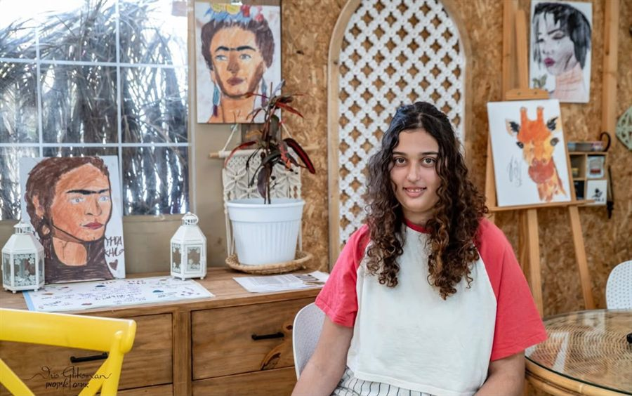
בית ש”י
מרכז קהילתי, חברתי וטיפולי בנהריה - חוגים, טיפולים, חצר וכלבים טיפוליים.
קראו עודאצלנו ילדים על הרצף האוטיסטי מוצאים מקום שמקבל אותם בדיוק כפי שהם. מקום שבו הם יכולים להרגיש בטוחים, שייכים, אהובים וחופשיים להיות הם.
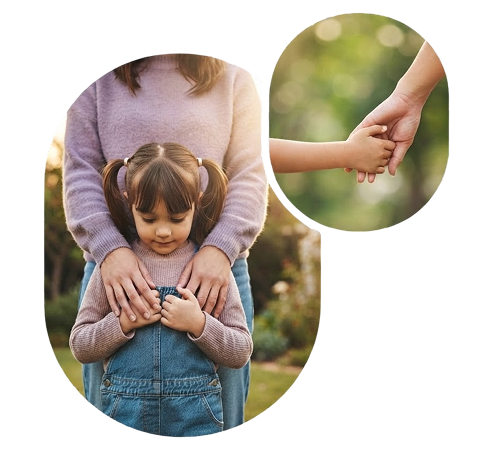
עמותת אהבת חינ"מ לכולם הינה עמותה ,שהוקמה מתוך צורך אמיתי של ילדים על הספקטרום האוטיסטי ובני משפחותיהם.
יסוד העמותה באמונה שלכל אדם הזכות לחיות בכבוד תוך מתן אמצעים וכלים לאנשים עם מוגבלויות, לחיות באיכות חיים טובה יותר ובשותפות , ככל הניתן בחיי קהילה. כל זאת באמצעות פיתוח ומתן שירותים חינוכיים, טיפולים חדשניים, פעילות מחקר והכשרה מקצועית . הקמת מערך תקשורתי ליצירת שינוי עמדות חברתי והמשך העלאת הנושא על סדר היום הציבורי.
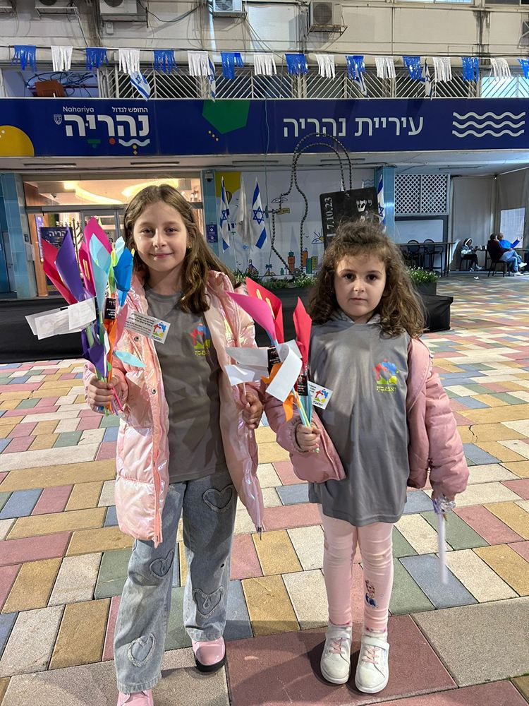
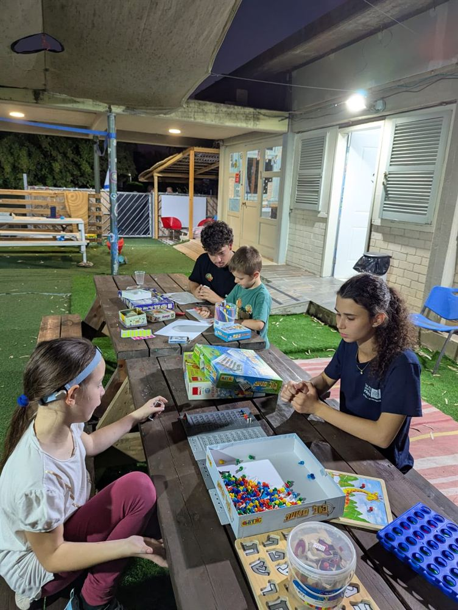
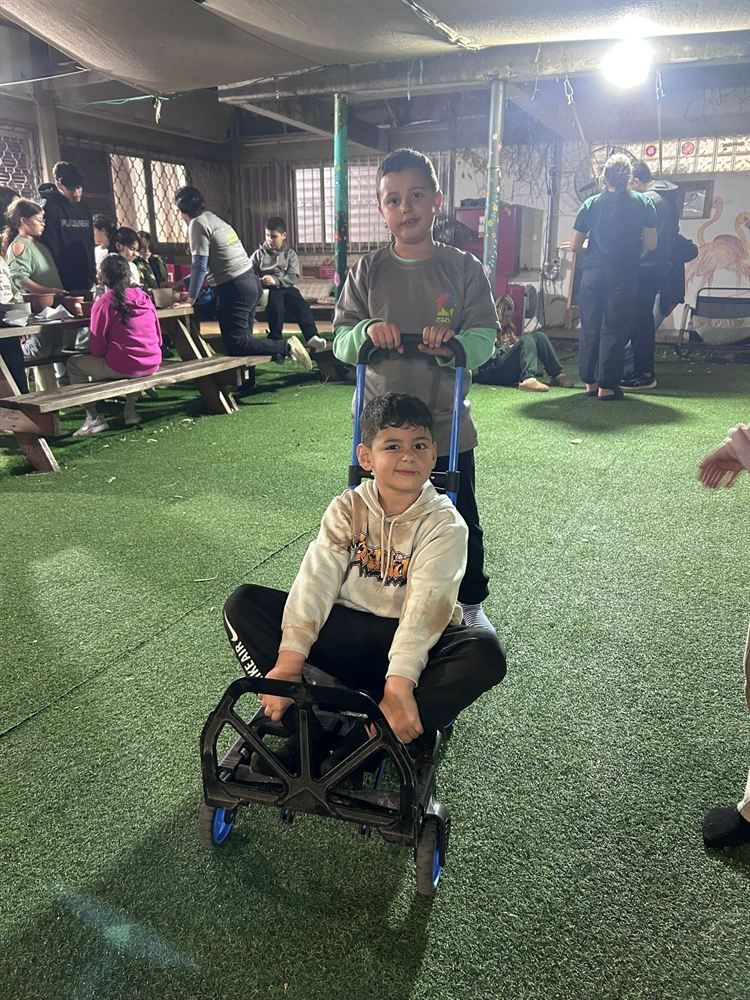
העמותה נוסדה על ידי אמהות ואחיות לילדים על הרצף האוטיסטי יחד עם יזמים חברתיים. העמותה שמה עצמה למטרה להקים מרכז קהילתי טיפולי, תוך שהמקום מהווה למעשה בית, אך העשייה בו מתנהלת כל העת על ידי אנשי מקצוע ומטפלים מוכשרים ומוסמכים בתחום. כמו כן, הצורך בשילוב ושיפור מיומנויות תקשורת וכישורים חברתיים, בא לידי ביטוי בכך שהפעילות החוגית טיפולית תתקיים תמיד בקבוצות קטנות.
בית ש"י יהיה מודל לבתים נוספים בפריפריה.
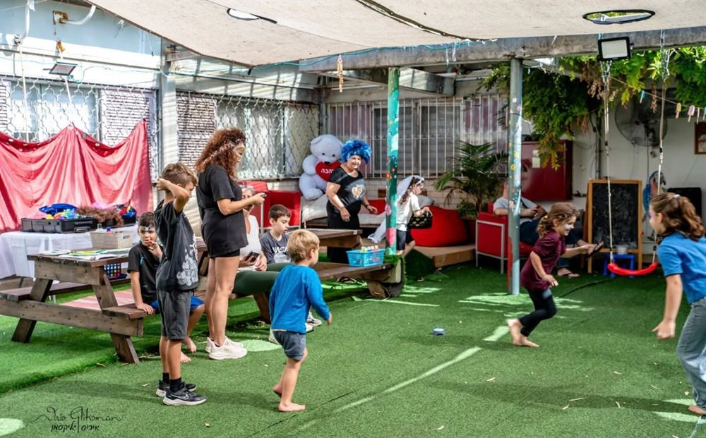
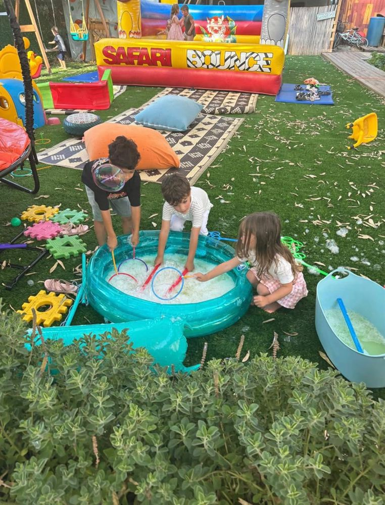
בכל אחד משמונת ימי החנוכה התארחו בבית ש”י להדלקת נר חגיגית עשרות אורחים מבתי הספר בנהריה.
קראו עוד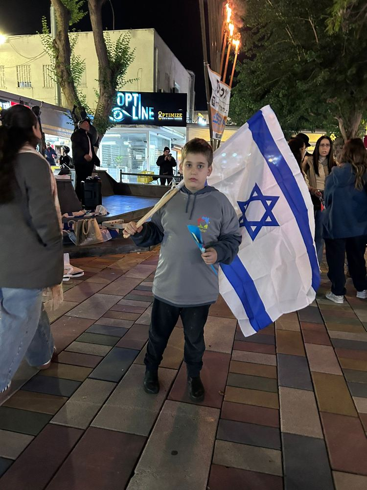
סיור ג’יפים לתלמידי בית הספר “התומר” שבעכו, בחסות בית ש”י - שלוש כיתות ובהן 12 ילדים על הרצף.
קראו עוד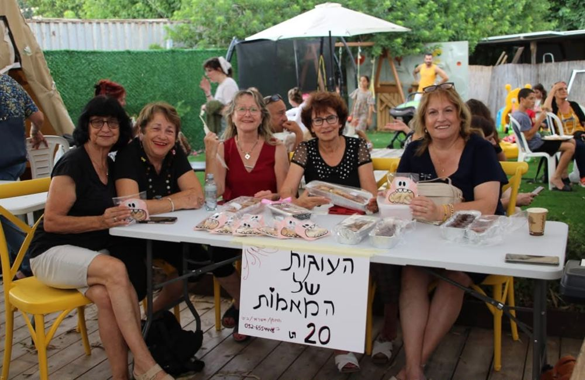
מרוץ הלילה של נהריה התקיים זו השנה השישית ברציפות, בהשתתפות ילדי העמותה ומשפחותיהם.
קראו עוד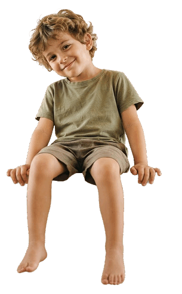
התרומה שלכם מאפשרת לילדי בית שי לקבל את הכלים, התמיכה והאהבה שמגיעים להם. כל תרומה, קטנה כגדולה, הופכת להזדמנות אמיתית עבור ילד ומשפחתו כל תרומה, קטנה או גדולה, הופכת לעוד חיוך, עוד הצלחה, עוד חבר חדש ועוד ילד שמרגיש שהוא שייך.
לעמוד התרומות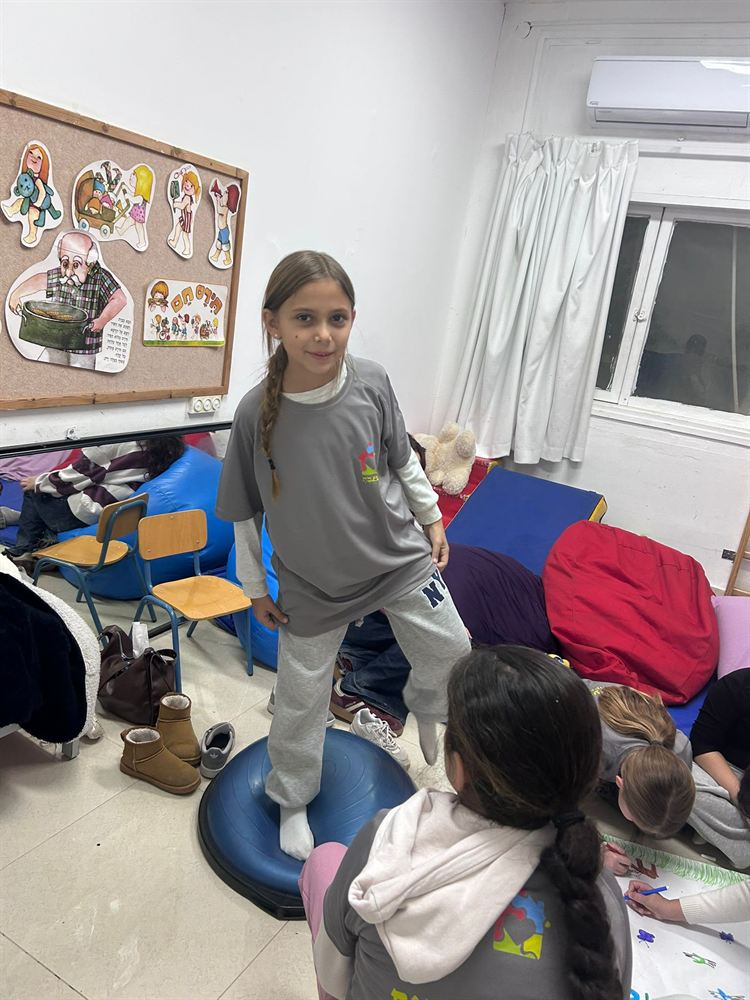
בזכות תרומות של אנשים טובים נחנך מתחם הפעילות החדש של בית שי – מרחב בטוח ומלא אפשרויות לצמיחה.
קראו עוד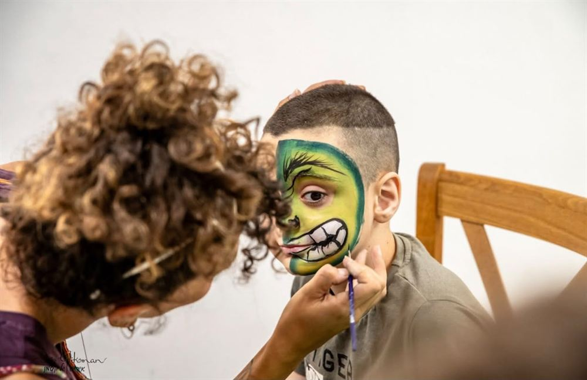
מכירת הכרטיסים לאירוע ההתרמה של בית שי יוצאת לדרך – הזמנה לקחת חלק בעשייה למען ילדים על הרצף האוטיסטי.
קראו עוד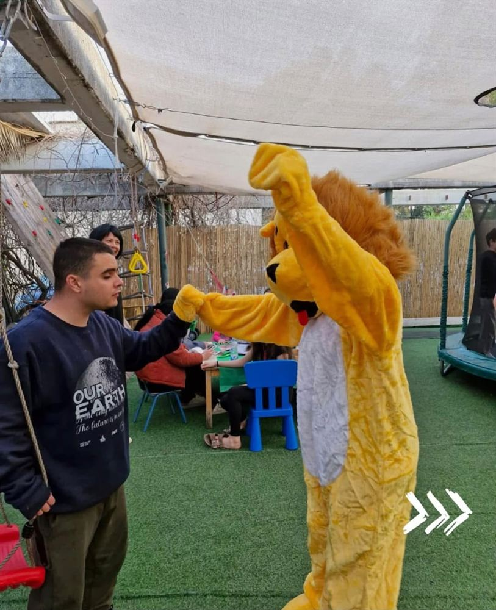
להקת שי־יה, המורכבת מילדי בית שי, ריגשה את הקהל בערב ההתרמה והוכיחה שכישרון ואמונה יכולים לפרוץ כל גבול.
קראו עוד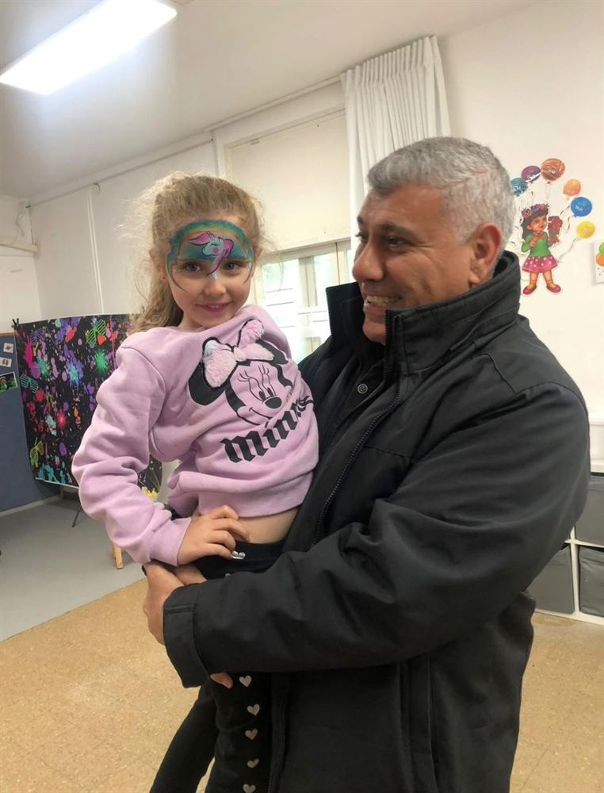
אנשי תקשורת, אמנים ודמויות מוכרות התגייסו למען בית שי והעניקו את קולם למען עתיד טוב יותר לילדים על הרצף האוטיסטי.
קראו עוד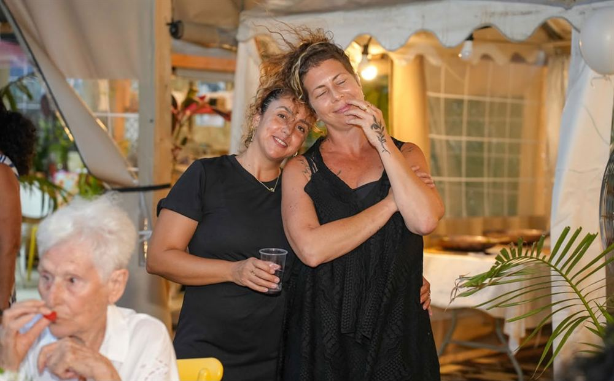
בית שי פתח שעריו ליריד יד שנייה ותצוגת אופנה מיוחדת, אירוע קהילתי שחיבר בין יצירה, כישרון ואהבה גדולה.
קראו עוד